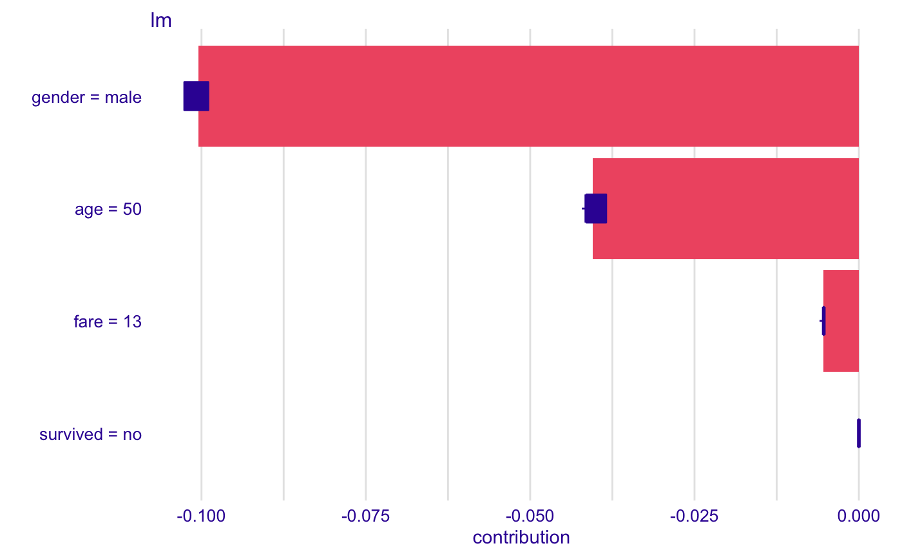
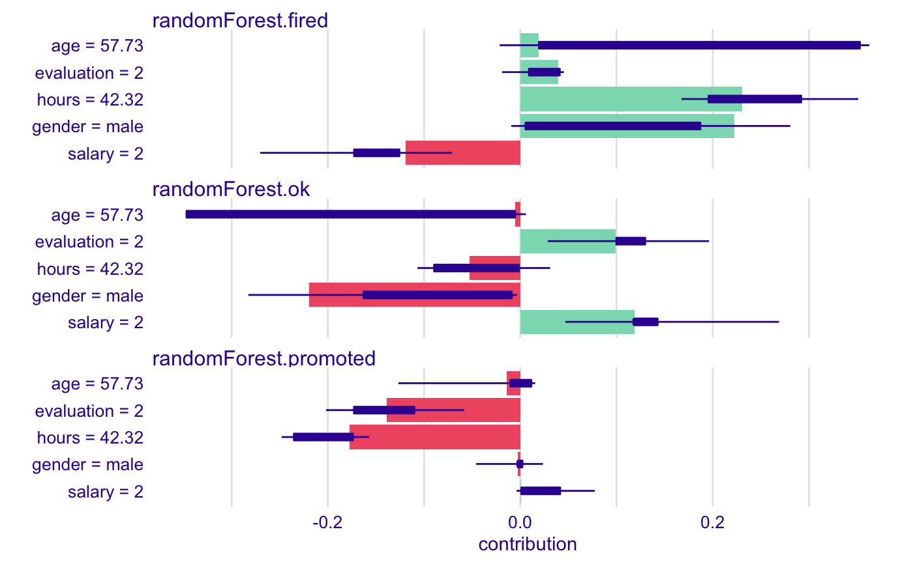

Plot Generic for Break Down Uncertainty Objects
Plot Generic for Break Down Uncertainty Objects
# S3 method for break_down_uncertainty plot(x, ..., vcolors = DALEX::theme_drwhy_colors_break_down())
Arguments
| x | the model model of `break_down_uncertainty` class. |
|---|---|
| ... | other parameters. |
| vcolors | named vector with colors. |
Value
a `ggplot2` object.
Examples
## Not run: library("DALEX") library("iBreakDown") library("randomForest") set.seed(1313) model <- randomForest(status ~ . , data = HR) new_observation <- HR_test[1,] explainer_rf <- explain(model, data = HR[1:1000,1:5], y = HR$status[1:1000]) bd_rf <- local_attributions_uncertainty(explainer_rf, new_observation, path = c(3,2,4,1,5)) bd_rf#> min q1 median q3 #> randomForest.fired-age -0.021328 0.019462 0.163675091 0.277413 #> randomForest.fired-evaluation -0.018856 -0.018856 0.022113455 0.048419 #> randomForest.fired-gender -0.002236 0.005474 0.088604364 0.197085 #> randomForest.fired-hours 0.174678 0.230614 0.262828727 0.290862 #> randomForest.fired-salary -0.215994 -0.163913 -0.144807636 -0.119176 #> randomForest.ok-age -0.346842 -0.216186 -0.136478000 -0.009476 #> randomForest.ok-evaluation 0.083034 0.099398 0.109666545 0.106311 #> randomForest.ok-gender -0.282642 -0.188968 -0.087593091 -0.003480 #> randomForest.ok-hours -0.102472 -0.075861 -0.061595818 -0.053010 #> randomForest.ok-salary 0.042420 0.118454 0.115850364 0.119146 #> randomForest.promoted-age -0.126732 -0.022355 -0.027197091 -0.005548 #> randomForest.promoted-evaluation -0.201822 -0.157818 -0.131780000 -0.081440 #> randomForest.promoted-gender -0.013566 -0.002331 -0.001011273 0.002276 #> randomForest.promoted-hours -0.280566 -0.215001 -0.201232909 -0.175584 #> randomForest.promoted-salary -0.003902 0.000722 0.028957273 0.049408 #> max #> randomForest.fired-age 0.362800 #> randomForest.fired-evaluation 0.068846 #> randomForest.fired-gender 0.280686 #> randomForest.fired-hours 0.383038 #> randomForest.fired-salary -0.102574 #> randomForest.ok-age 0.005860 #> randomForest.ok-evaluation 0.196252 #> randomForest.ok-gender -0.002292 #> randomForest.ok-hours -0.006356 #> randomForest.ok-salary 0.181536 #> randomForest.promoted-age 0.028826 #> randomForest.promoted-evaluation -0.081440 #> randomForest.promoted-gender 0.004528 #> randomForest.promoted-hours -0.168322 #> randomForest.promoted-salary 0.077562plot(bd_rf)# example for regression - apartment prices # here we do not have intreactions model <- randomForest(m2.price ~ . , data = apartments) explainer_rf <- explain(model, data = apartments_test[1:1000,2:6], y = apartments_test$m2.price[1:1000]) bd_rf <- local_attributions_uncertainty(explainer_rf, apartments_test[1,], path = c("floor", "no.rooms", "district", "construction.year", "surface")) bd_rf#> min q1 median q3 #> randomForest-construction.year -128.1290 -126.3012 -96.41844 -75.28959 #> randomForest-district 1033.5280 1050.0080 1076.88062 1093.70274 #> randomForest-floor 165.9773 173.6559 197.75176 220.55557 #> randomForest-no.rooms -246.9539 -227.9948 -201.47496 -173.26509 #> randomForest-surface -331.4628 -289.1663 -276.45829 -258.97323 #> max #> randomForest-construction.year -46.89048 #> randomForest-district 1142.44289 #> randomForest-floor 231.48942 #> randomForest-no.rooms -143.89151 #> randomForest-surface -229.42256plot(bd_rf)